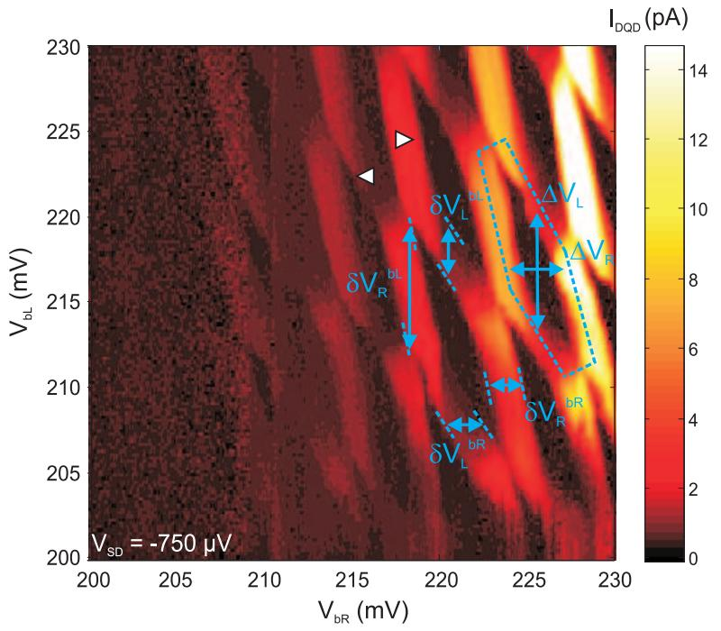
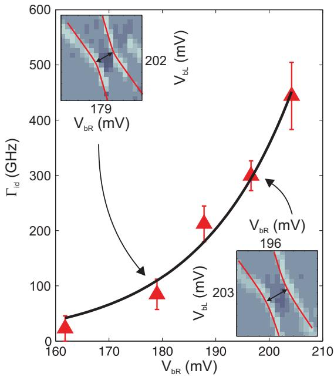

物理图像与定义
隧穿耦合（tunnel coupling）描述一个电子以量子隧穿方式从一个量子点穿过中间势垒进入相邻量子点（或电子库）的概率振幅，是一个由波函数交叠程度和势垒形状共同决定的实数参数。两个量子点之间、量子点与源漏电子库之间的隧穿耦合在物理上同源，只是被考察的”另一侧”不同：前者关心点间杂化能 （也被写作 、），后者关心库仑阻塞的进、出速率 、。
把点间隧穿耦合打开之前，双量子点是两只完全独立的”人造原子”——左右两点的电荷占据数各自服从单点规则，电荷稳定图由横竖两组平行直线构成。打开隧穿耦合 之后，左右两点局域态通过矩阵元 发生杂化，左右两点的波函数在势垒下方渗透一段距离并相干叠加成键态（低能）与反键态（高能），能级差为 ——这一点势垒就像把两只原子焊到一起的化学键，于是双点从两个原子变成一个人造分子。这正是 在其第 2.2.3 节给出的图像：“弱隧穿耦合下电子波函数几乎不重叠，系统表现为两个独立的量子点；而在强隧穿耦合下电子波函数显著重叠，形成分子状的结合态和反结合态，导致能级劈裂。”
点与源漏电子库之间的隧穿耦合通常以速率 描述。对输运而言， 必须远小于充电能 与单粒子能级间隔 ，以保证电子以隧穿方式逐个进出、量子化的能级可以被分辨；对读出与初始化而言， 又必须足够大，才能让器件在合理时间内与电子库达到平衡。这意味着 在器件设计中是一个有界的”窗”，常常通过对源漏势垒电极电压的精细调节固定在 （对应 Li 2018 锗硅纳米线空穴点的隧穿展宽 ）的量级。
势垒栅压对隧穿耦合的调控呈近似指数关系——势垒每升高一个特征长度，波函数交叠就指数式衰减；这使得隧穿耦合在数 到数 的范围内可调（见参数与量级）。同一电极对隧穿耦合与点电化学势的杠杆臂一般不可分离，实际调参常借助虚拟电极把”势垒方向”和”柱塞方向”近似解耦。
理论模型：双量子点电荷二能级
最低阶描述只保留两个电荷态 与 ，分别对应电子占据左、右点，例如 与 ，更高能态被暂时忽略。这两个态之间存在矩阵元 ，并由柱塞栅压引入能量差 。把它们写成以 、 为基矢的矩阵形式
这与电荷量子比特所用的哈密顿量一致（见 式 2.31， 式 1.7）。
对角化后得到本征能量与本征态：
其中混合角 。当失谐为零（）时，系统处于 和 的最大杂化态 ，能级达到最小间距 ，这正是电荷稳定图三相点附近看到的反交叉（avoided crossing）能隙。当 时 退化为纯 、，反交叉间隙不影响两端的能级排序，蜂窝图上的直线则恢复为锐利的边界。
对Landau–Zener 跃迁而言， 决定了避免交叉处能级之间的最小间距；含时地把 从一侧扫到另一侧时，穿过反交叉的透射概率为 ，其中 是失谐扫描速率。隧穿耦合越大、扫描越慢，越倾向于以绝热方式停留在原来的能态上，从而抑制 Landau–Zener 失谐跃迁。
与 Hubbard 模型的对应
把双点推广为电荷稳定图背后的多能级描述时，常用常相互作用模型（CI 模型）之外的 Hubbard 模型。在多量子点（如量子点阵列或二维阵列）中， 描述了相邻点间的相干耦合：
其中 正是量子点 与 之间的隧穿耦合（跃迁矩阵元）， 是点内充电能， 是点间库仑相互作用。CI 模型把 中的最后一项（隧穿项）丢掉，于是得到纯经典的蜂巢直线图；保留 后，三相点附近的电荷转变线就会发生弯曲——直线在反交叉处被”推开”出 的能隙，弯曲程度直接标定隧穿耦合的大小。这一点正是 明确指出的：“常相互作用模型无法解释反交叉的弯曲现象，这是因为它只考虑了电容耦合作用”。
在多量子点（如量子点阵列或二维阵列）中，相邻两点的 与更远点对的 是两类独立可调参数。最近邻 由相应势垒栅极直接控制；次近邻 通常要借助中心的中央势垒电极或形变结构来打开，对应”方形”与”菱形”耦合拓扑的切换（详见二维阵列与量子点阵列）。
隧穿耦合的实验可观测量
隧穿耦合进入任何可观测量的方式，都可以被概括为两条路径：一是作为反交叉能隙直接出现在能谱上；二是通过混合角 调制与波函数、电偶极矩相关的耦合强度。
(1) 点间电荷转移线拟合。 在反交叉附近沿失谐方向做精细电荷传感或输运测量，电子占据左点的概率可由 DiCarlo 等给出的热展宽公式描述（ 式 1.8、 式 5.5）：
其中 是电子温度， 是二能级系统在 处的瞬时能级差。弱耦合极限 下， 几乎是阶跃函数；强耦合极限 下， 在 附近被热展宽为 的软阶跃。把实验曲线与上式做最小二乘拟合即可同时提取 与 。
(2) 反交叉弯曲的几何读出。 当三相点附近电荷转变线由直变弯时，其弯曲程度由隧穿耦合 与点间库仑相互作用 共同决定。文献给出的双曲线拟合函数为
其中 是电化学势相对反交叉中心的偏移。两个三相点之间的电荷转变线距离减去 即为 ； 可以从一个点多/少一个电子时另一个点转移线的偏移量独立标定。这一方法对最近邻、次近邻点对同样适用——只要目标双点之外的点都被置于大失谐处、构成孤立的二能级系统。
输运谱学的逐点提取与 WKB 标度（Wild 2010）
早期 Si/SiGe 双点的直流输运谱学给出了另一套互补的提取方法（Wild et al. 2010，Pd 栅耗尽型器件）。在偏置输运窗口 下，电荷稳定图充电线的宽度直接标定四个杠杆臂（、、、），相邻充电线间距换算出两点充电能 、；偏压极性翻转时右侧点的充电线出现共隧穿亚结构、左侧点的线几乎消失——输运经右侧点共振隧穿、经库仑阻塞的左侧点共隧穿进行，是能级配置的手印。

偏置输运电荷稳定图：dc 电流随左右势垒栅压 V_bL、V_bR 变化（偏压 −750 µV），充电线宽度对应输运窗口 eV_SD——由此标定四个交叉杠杆臂，相邻线间距给出两点充电能 E_C ≈ 1.5 / 1.6 meV。图源：Wild et al. (2010), Fig. 2。
点间隧穿率的提取：在远离储库的深孤立区，三相点附近的反交叉用
拟合（ 是两点不对称能量、 是经典点间充电能、 是点间隧穿率；配合杠杆臂线性变换与坐标旋转），逐点得到 。全局拟合给 ，而 随势垒栅压呈指数变化——这正是 WKB 直觉：
其中 是势垒宽度、 是随栅压线性下降的势垒高度、 是有效质量；小栅压近似下标度因子 。

点间隧穿率的提取与 WKB 拟合：三角形为不同势垒栅压 V_bR 下由三相点附近反交叉拟合得到的 Γ_id（插图为例示反交叉），实线为 WKB 近似的指数拟合 exp(βV_bR)；深孤立区（左图）中隧穿率从 ≫1 Hz 降到 ≪1 Hz，充电线断续甚至消失——跨越测量带宽的直接证据。图源：Wild et al. (2010), Fig. 7。
这张指数标度图同时给出一个实用的实验判据：当 （或点–储库隧穿率 ）降到测量带宽（~1 Hz）以下时，充电线在稳定图上断续或消失——“深孤立区”的边界可以直接从图上读出，这正是单电子泵浦与泡利自旋阻塞读出所需要的工作区起点。
(3) 微波光谱。 在电荷量子比特中， 处的比特频率 （ 式 4.4 与式 5.7），用两路微波（探测腔 + 驱动）做双色调制谱即可从比特响应峰直接读出 。当 时比特频率与腔频率可分别移动到同一频段，可观察避免交叉与真空 Rabi 劈裂；当 时比特与腔的耦合区连续穿越扫频范围，呈现与” 较小”时显著不同的曲线。
(4) 库仑阻塞峰的热展宽。 在弱点间隧穿（接近 0）下，单点库仑峰的半高宽正比于 ，主要受电子温度和 SET 反作用、交流激励幅值等展宽机制限制；当 增大到与电子温度可比时，库仑峰在原本的半高宽基础上叠加量子隧穿效应引起的额外展宽，称为量子展宽（quantum broadening）。这一展宽为独立交叉校验 提供了一个粗略但稳定的途径。
(5) 量子电容与色散读出。 隧穿耦合把点间电荷转移展宽为一条带斜率 的量子电容线，其在腔反射谱上的相位响应就是色散读出的物理基础；当 接近腔的频率时，色散频移 在 反号时翻向，体现为 因子对耦合强度的调制——这一关系直接把隧穿耦合的数值与腔信号的强弱绑定起来。
(6) 时间域电荷振荡。 在双量子点失谐点上施加快速脉冲把系统推到 与 的等能量叠加态，电子随后在两点之间以 的频率振荡。测量 即可得到隧穿耦合；这是交换相互作用在自旋比特体系下的时间域类比，但此时还没有进入自旋自由度。
参数与量级
隧穿耦合 的数值高度依赖器件几何、势垒高度与材料体系，下表汇集论文依据中的实测值。量级规律可总结为三条：
- 势垒栅压呈近指数依赖： 与势垒电压 的斜率约为 （ 给出 、，相邻势垒间相差近 5 倍）。
- 范围覆盖约 4 个数量级：从弱耦合极限 （受电子温度、SET 反作用、交流激励功率展宽限制）到强耦合 （受点间杂化增强、转移线展宽使拟合失效限制），并可被独立关断或打开。
- 次近邻 通常被抑制到接近零：在 Si/SiGe 二维阵列中，即使最近邻耦合加大到 ，次近邻 、 仍保持接近零的剩余值；这正是表面码纠错方案所要求的”最近邻连接”模式。
| 量 | 典型值 | 体系 / 条件 | 来源 |
|---|---|---|---|
| 点间隧穿耦合 | –，指数可调 | 电子型非掺杂 GaAs DQD，250 mK | |
| 点间隧穿耦合 | –，指数可调 | 电子型非掺杂 GaAs DQD，10 mK | |
| 点间隧穿耦合 | –，可调至接近零 | Si/SiGe 2×2 阵列的四个最近邻 | |
| 点间隧穿率 WKB 标度 | （Pd 栅 Si/SiGe DQD） | Wild 2010 | |
| 反交叉拟合点间充电能 | Wild 2010 | ||
| 深孤立区隧穿率 | 从 Hz 降到 Hz，充电线断续/消失 | Wild 2010 | |
| 点间隧穿耦合 | 、、（对应 、、） | Si/SiGe DQD，分别 、、 | |
| 点间隧穿耦合 | （） | Si/SiGe TQD 中的 RDQD 翻转模式比特 | |
| 点间隧穿耦合 | （） | Si/SiGe TQD 中的 LDQD 翻转模式比特 | |
| 共振交换比特隧穿耦合 | 、 | Si/SiGe TQD，RX 比特工作位 | |
| 势垒调控指数 | – | Si/SiGe 2×2 阵列，势垒 B12/B23/B34/B41 | |
| 充电能 | 、、、 | Si/SiGe 2×2 阵列，四个量子点（虚拟栅极提取） | |
| 杠杆臂 | Si/SiGe 2×2 阵列，平均值 | ||
| 电子温度 | （无微波）；（微波加热） | 无液氦稀释制冷机，非掺杂 GaAs | |
| 电子温度 | （拟合下界） | Si/SiGe 2×2 阵列，20 mK | |
| 拟合最低可分辨 | SET 偏置 0.2 mV、激励 200 µV |
隧穿耦合在比特体系中的具体作用
(1) 电荷量子比特与翻转基因。 在电荷量子比特中，隧穿耦合决定比特频率 与相干时间。增大 可以把比特频率推到与腔匹配的 量级，从而实现强耦合，但同时增加的电偶极矩会让电荷噪声更直接地耦合进比特，导致 变短——这是电荷比特设计中的核心权衡。
(2) 单态–三重态与交换比特。 在单态–三重态量子比特中，交换相互作用由虚跃迁产生， 引用的标准结果为
即隧穿耦合是交换作用的二阶源头。负大失谐极限下 ，对失谐（亦即栅压）的敏感度随 升高，调势垒或调失谐都能改变 ，但二者对电荷噪声的敏感度不同。
(3) 共振交换量子比特。 在三量子点中编码的共振交换（RX）量子比特中，三个电子分布在三个点之间，比特频率主要由隧穿耦合决定。 在 且 时给出 ；实验拟合得到 、，从而 。
(4) 与腔的耦合强度。 隧穿耦合通过混合角调制有效自旋–光子耦合强度（ 式 2.56）：
其中全局耦合 ，正比于谐振腔特征阻抗 的平方根。因此，提升隧穿耦合是把电偶极矩”传递”给自旋比特的关键途径——这是 用 Si/SiGe TQD 配合高阻抗腔（）实现自旋–光子强耦合（）的微观机理。
(5) 库仑阻塞与电荷传感器。 单点与源漏的隧穿速率 必须满足 ，即 ，否则库仑阻塞被抹平、量子化的电荷数无法维持。点–库隧穿也通过 直接进入QPC 电荷传感与射频反射测量的带宽与灵敏度——增大 可提高读出响应速度但增加电荷漏失。
实验特征与调控策略
(1) 通过势垒栅指数调节。 势垒栅每改变数十毫伏， 即可在 到 量级跨越近 4 个数量级；但同一势垒栅往往也对相邻点的电化学势产生串扰，需要虚拟电极对势垒方向与柱塞方向做正交化。 在非掺杂 GaAs 双量子点上以中间栅极 或 实现了 的指数型连续调节， 在 Si/SiGe 2×2 阵列上对四个最近邻势垒分别给出了 的数值。
(2) 关断次近邻、保留最近邻。 表面码纠错要求次近邻隧穿耦合被完全抑制。在 的器件中，中心势垒 CB 电压为零时，、 的拟合值接近零；通过将 CB 电压加到 250 mV 可以单独打开 、关闭 ，从而把阵列从”方形”切换为”菱形”耦合结构，为模拟阻挫磁性与几何阻挫提供平台。
(3) 微波辅助隧穿谱。 把微波驱动加到势垒电极或柱塞电极上时，隧穿耦合可由光子辅助隧穿（PAT）共振线之间的距离提取。 用 PAT 共振条件 反演得到 ，与电荷转移线拟合的结果互相校验；、 的 JC 模型章节中也给出了等价的微波频谱推导。
(4) 时间域电荷振荡。 在脉冲实验中观测 的振荡可同时给出 与退相干速率 ；但要把它从电荷噪声主导的退相干中分离出来，需要多组失谐与多组微波功率的数据——这通常作为独立交叉校验隧穿耦合的最后手段。
(5) 读出与初始化带宽。 隧穿耦合进入单发读出的窗口是双重的： 必须远小于能级间隔（保持量子化），又必须远大于 （确保电子可以在 量级的时间内从源漏注入）。因此一个稳定的单发读出点总是先把点间隧穿调到极弱、把点–库隧穿调到中等，再以电荷传感器读出点内电荷占据。
(6) 与电荷噪声的耦合。 由于隧穿耦合通过混合角 直接进入比特的电荷灵敏度，电荷噪声会通过 通道间接地退相干比特。实验上常通过对比大失谐（小 ）与零失谐（大 ）下的退相干时间来量化隧穿耦合对相干性的贡献。
与其他概念的关系
- 库仑阻塞是隧穿耦合存在的”边界条件”：当 时，库仑阻塞被抹平；当 时，双量子点塌缩为单点。隧穿势垒的透明度由隧穿耦合控制，它同时决定阻塞的”封闭程度”与库仑峰的高度。
- 电荷稳定图上的反交叉弯曲直接由隧穿耦合决定： 明确指出”CI 模型无法解释反交叉的弯曲现象”。弯曲程度是 的最常用几何读数，也是自动调点中判断”欠耦合 / 适中 / 过耦合”的特征量。
- 库仑菱形与隧穿耦合：当点–库耦合过强时，菱形边界会模糊甚至消失；势垒过开使 不可忽略、顶点不再锐利——库仑菱形的边界质量本身就是隧穿耦合的诊断量。
- 电荷量子比特直接把 写入比特哈密顿量， 是比特频率的主要来源。
- 单态–三重态量子比特的交换作用 由隧穿耦合二阶产生，因此 的标定直接决定两比特门的速度与保真度。
- 共振交换量子比特的比特频率正比于最近邻隧穿耦合（）；调谐 是 RX 比特全电控制的核心手段。
- 电荷–光子耦合、自旋–光子耦合的有效耦合强度通过 调制；隧穿耦合越大，电荷比特–腔耦合越强，但退相干也越快。提升隧穿耦合同时配合高阻抗谐振腔是实现自旋–光子强耦合的常规路线。
- Landau–Zener 跃迁概率 完全由 与失谐扫描速率决定；隧穿耦合越大、扫描越慢，越接近绝热跟随。
- 光子辅助隧穿共振线之间的距离 是从微波谱提取 的独立手段，常作为电荷转移线拟合的交叉校验。
- 虚拟电极通过解耦势垒方向与柱塞方向，使 可以在不移动电化学势的情况下独立调节，是阵列化器件中隧穿耦合调控的关键工程工具。
- 电荷噪声通过 间接进入比特退相干——隧穿耦合越大，比特对噪声越敏感。
- 有效二维包络函数理论：仿真侧的警示——台阶界面下固定高度切片会把 算错一到两个量级，必须把垂直基态能量修正 并入二维有效势，才能以二维成本复现全三维的 。
参考文献
- Wild, A., Sailer, J., Nützel, J., Abstreiter, G., et al. Electrostatically defined Quantum Dots in a Si/SiGe Heterostructure. New Journal of Physics 12, 113019 (2010). DOI: 10.1088/1367-2630/12/11/113019；arXiv:1007.2404（QAtlas 缓存：1007.2404）。
完整文献库（含各篇站内全文页）见 参考文献库。